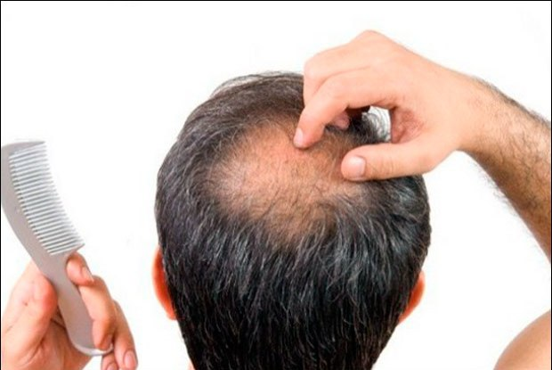
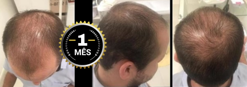
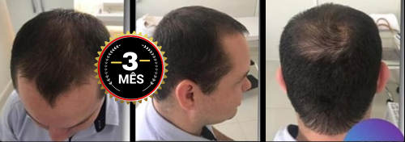
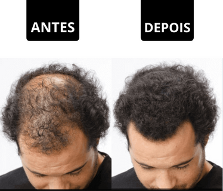
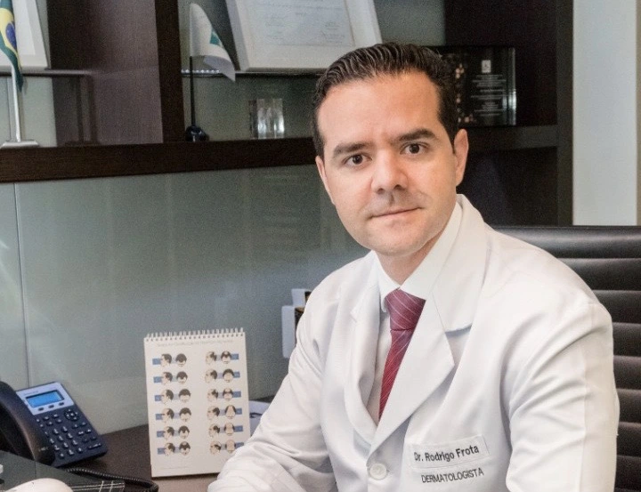
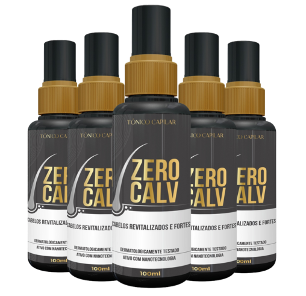

A Calvície é um assunto delicado, principalmente dentro do universo masculino. Para muitos homens, a perda de cabelo acarreta problemas de autoestima, e é capaz de desencadear dificuldades de aceitação da autoimagem e de afirmação da masculinidade.
A Organização Mundial da Saúde (OMS) alerta: aproximadamente metade da população masculina sofrerá com algum grau desta disfunção capilar até os 50 anos de idade. Ao redor do mundo, cerca de 10% dos homens jovens (numa faixa etária de 20 a 30 anos) já são acometidos pela calvície e, no Brasil, os calvos totalizam uma média de 42 milhões de cidadãos, de acordo com a Sociedade Brasileira para Estudo do Cabelo (SBEC).
Diante destas estatísticas de números elevados, é hora de saber tudo sobre a Calvície. Conheça as principais causas e tratamentos para este mal inconveniente, e fique por dentro das medidas mais efetivas para prevenção da queda demasiada de cabelo durante qualquer fase da vida.
Muitos homens em todo o mundo enfrentam ou vão enfrentar a calvície. Esse problema, que afeta a vida do homem em todos os aspectos, desde a auto-estima até o convívio social, pode ter uma melhora significativa.
Sim, Tônico Zero Calv pode causar uma transformação em você e recuperar milhares de cabelos perdidos. Quem nunca sonhou em ter os cabelos da juventude e se olhar no espelho com orgulho? Tudo isso graças ao Zero Calv: uma fórmula revolucionária e 100% natural, que visa parar o avanço da calvície e estimular o crescimento de novos fios.
 O Tônico Zero Calv foi desenvolvido para que os resultados apareçam já nos primeiros dias. O tratamento tem como função nutrir o couro cabeludo. Seu poder antioxidante promove o fluxo vascular e melhora a saúde dos fios. Consiga o cabelo dos seus sonhos sem a necessidade de implantes. As substâncias anti-inflamatórias do tratamento são essenciais para o rejuvenescimento capilar, além de combater o stress promovendo melhores noites de sono.Sem frescuras. Sem implantes. Sem idas ao médico. 100% Natural,
Até então, milhares de homens que são afetados pelos problemas da calvície partem para uma solução temporária, que é uso de perucas, ou para uma solução extremamente cara e sem resultado satisfatório, que é o implante. A fórmula revolucionária do Zero Calv chegou para colocar um ponto final nas soluções paliativas e serem um tratamento definitivo para esse problema.
O que antes parecia impossível, se tornou realidade: um liquido 100% natural que substitui tratamentos clínicos. Desenvolvidas apenas com ativos naturais em duas fórmulas específicas. Zero-Calv não afeta nosso metabolismo e não apresenta nenhuma contra-indicação.
“Sempre sofri com a calvície. Quando minha careca começou a crescer, minha auto-estima foi destruída. Tinha vergonha de sair com meus amigos. Quando soube do Zero Calv eu achei que era boato, no começo. Mas dei uma chance. Depois de alguns dias já vi o resultado e não parei mais. Meu cabelo parou de cair e começou a crescer cabelos novos. Nunca imaginei que minha vida ia mudar sem precisar de consultas médicas e afins”
André Rodrigues , 53 anos – Servidor Público
Zero-Calv não mudou só a vida de Andre, mas de vários outros homens que tiveram suas vidas afetadas pela calvície. Em poucos dias, de maneira fácil, rápida e segura, Zero Calv recuperou os cabelos que eles já tiveram um dia.
“Depois de anos assistindo meu cabelo cair diariamente, fiquei emocionado em achar uma solução para calvície. Os resultados rápidos do tratamento simples do Zero-Calv me fizeram me sentir especial e seguro. Minha auto-estima foi lá em cima, assim como minha confiança para lidar com as mulheres . Me sinto um novo homem, como se tivesse voltado no tempo até minha adolescência.”
Pedro Oliveira, 32 anos - Advogado
 Pedro Oliveira, 32 anos de São Paulo (SP), depois de 3 meses de tratamento. (Foto: Facebook)  Pedro Oliveira, 32 anos de São Paulo (SP), depois de 3 meses de tratamento. (Foto: Facebook)Pode parecer história de filme de cinema, ou aquela história da novela das 20h. Mas quando você escuta da própria pessoa que foi protagonista disso tudo, você fica boquiaberto e fala: “Mas como isso foi possível?”. Pois bem. É exatamente assim que você vai se sentir quando souber da história de Pedro, 32 anos.
Desde adolescente Lucas começou a reparar na queda de cabelo. Aos 26 já era visível o que esse problema causou. O auge desse problema foi quando a companheira de Pedro o deixou por causa da queda de cabelo. Mas depois de começar a utilizar Zero-Calv, em poucos dias Lucas já se surpreendeu com o que viu no espelho.
O Começo
Soube do Tônico Zero-Calv pela internet. Depois conversei com alguns amigos que faziam piadas comigo, e um deles disse que conhecia o produto. O primo dele havia usado Zero-Calv e para minha felicidade, meu amigo disse que seu primo havia gostado muito. Decidido, fui atrás do produto. Fui bem atendido através das conversas que tive pelo Whatsapp com a empresa na intenção de receber dicas e detalhes dos produtos. Me explicaram que deveria aplicar o Zero-Calv ao acordar apos o banho e um antes de dormir. E só, simples assim.
Cinco dias após meu pedido, Zero-Calv estava entregue em casa. Agora era hora de começar minha mudança que eu tanto buscava.
Primeiro mês com Zero-Calv
O primeiro mês de uso foi determinante. Se ele não tivesse apresentado resultados rápidos, talvez eu tivesse largado o tratamento e não estaria aqui contando pra vocês.
Mas logo com 10 dias eu percebi mudança, avanço. Os fios de meu cabelo estavam mais fortes e mais volumosos. É como se desse pra perceber que aqueles que estavam ali não iam mais cair.
Segundo mês com Zero-Calv
Neste segundo mês, as pessoas começaram a reparar e comentar. Foi muito divertido ver a cara das pessoas quando perceberam que o “careca da turma” estava começando a ter cabelo de novo!
Este mês foi o momento de crescer novos fios. Se Zero-Calv em 10 dias fez eu perceber que meu cabelo já não ia mais cair, em 40 dias ele fez novos fios crescerem.
Isso era totalmente visível!
Terceiro mês com Zero-Calv
Ao fim de três meses, eu estou completamente fascinado pelo tratamento de Zero-Calv.
O melhor de tudo é que é um procedimento tão simples. Aplicar!
Elas não interferiram em nenhum momento no meu dia a dia, não deixei de fazer nada por isso.!
Recomendo Zero-Calv a todos. Especialmente aqueles que estão começando a perder o cabelo. Essa é a hora! Por que aí o resultado deve ser mais rápido ainda. Recomendo Zero-Calv a todos. Especialmente aqueles que estão começando a perder o cabelo. Essa é a hora! Por que aí o resultado deve ser mais rápido ainda.
Bom, é isso… O resultado você pode conferir nas fotos. Valeu Zero-Calv!
Dificilmente recomendamos algum produto no nosso site ou na revista, mas com as evidências de que funciona e a satisfação garantida, sentimos que nossas leitores iriam gostar da dica.
Além disso, a empresa responsável pela venda de Zero-Calv no Brasil confia tanto no seu produto, que oferece uma garantia de 100% de satisfação, basta entrar em contato com a empresa caso não estiver satisfeita.
Importante: Segundo o fabricante, Zero-Calv só está disponível para compra através da internet, e não é vendido em farmácias ou lojas especializadas.De acordo com a empresa, isso é porque a demanda pelo produto está tão alta, que o pouco estoque que eles têm é vendido em poucas horas através do site.
 DERMATOLOGÍSTA Rodrigo Frota. (Foto: Anti Age Magazine)O preço do Tratamento do Zero-Calv varia de acordo com a quantidade de frascos adquiridos. O fabricante trabalha com descontos progressivos, ou seja, quanto mais frascos você adquirir, maior será o desconto no valor final.
No Brasil, assim como nos Estados Unidos com a pandemia, o Zero-Calv trabalhará apenas com o sistema de vendas online, onde o cliente poderá adquirir pelo site oficial e receber no conforto da sua casa. CUIDADO: A marca Zero-Calv não vende pelo Mercado Livre, OLX, ou outros sites. Certifique-se estar comprando o produto ORIGINAL, por isso, sempre adquira do Site Oficial.
Durante a produção dessa reportagem, o fabricante entrou em contato com nossa produção e ofereceu um Desconto Especial e a condição de parcelamento em até 12x no cartão de crédito para nossos leitores que estiverem interessados em experimentar o Zero-Calv.
Atenção: O desconto é válido apenas enquanto durarem os estoques, e é aplicado automaticamente ao clicar na imagem abaixo.
Válida até hoje:
EXPERIMENTE ZERO-CALV EM 12X COM ATÉ 70% DE DESCONTO!
 COMPRE AGORA